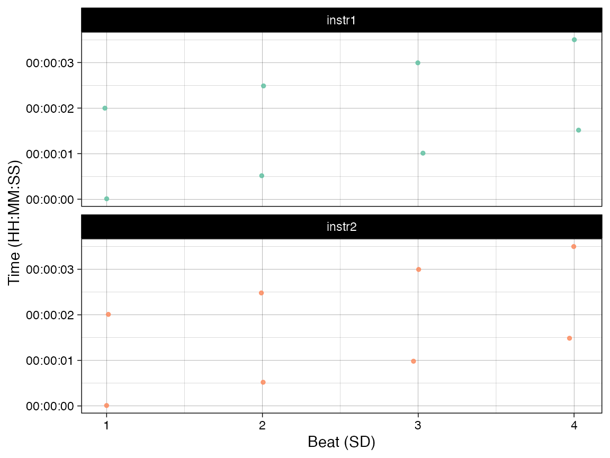

Minimal representation
minimal-representation.RmdWhat is the minimal amount of representation for the common functions? It depends on the function and the purpose of the analysis, but here we document three minimal cases: One with just pair of onsets, the same with a reference time (mean onset time), and an example with an external timing of the cycles.
Minimal example: Onsets of two instruments and a beat sub-division
We assume the minimal case will be two instruments playing together.
Here we create 8 joint onsets tapping in isochrony around twice a second
with a random variation. We also assume that there is a beat division
representing common time (4 beats/cycle), although the existence of the
beat sub-division (SD) does not need to reflect any
particular cycle, it could also be just a sequence of numbers.
library(onsetsync)
set.seed(12345) # to create the same random variation every time
ex <- data.frame(SD = rep(1:4,2),
instr1 = rep(0:7/2)+runif(8,min = -0.02,max=0.02),
instr2 = rep(0:7/2) + runif(8,min = -0.02,max=0.02)
)
print(knitr::kable(ex))| SD | instr1 | instr2 |
|---|---|---|
| 1 | 0.0088362 | 0.0091082 |
| 2 | 0.5150309 | 0.5195895 |
| 3 | 1.0104393 | 0.9813814 |
| 4 | 1.5154450 | 1.4860949 |
| 1 | 1.9982592 | 2.0094274 |
| 2 | 2.4866549 | 2.4800455 |
| 3 | 2.9930038 | 2.9956481 |
| 4 | 3.5003690 | 3.4984998 |
Here we have two instruments (instr1 and
instr2) and a simple beat sub-division (SD).
Note that beat sub-division do not need to be specific, it could be a
column of numbers (you could create such a column with
ex$SD <- 1:nrow(ex) if you only have onsets, nothing
else). For the basic analysis of synchrony, this is already sufficient
for the calculation of asynchronies.
d <- sync_sample_paired(ex,'instr1','instr2', beat = 'SD')
print(paste('Mean absolute asynchrony:', round(mean(abs(d$asynch*1000)),0),'ms'))## [1] "Mean absolute asynchrony: 11 ms"Minimal example with a reference time
Let’s add a reference time for a minimal
representation that is required for plotting. Here we create a reference
time which is the mean of the instrument onsets using
add_isobeats() function.
ex1 <- add_isobeats(ex, instr = c("instr1","instr2"), beat = "SD")
print(knitr::kable(head(ex1,4)))| SD | instr1 | instr2 | Mean.Time |
|---|---|---|---|
| 1 | 0.0088362 | 0.0091082 | 0.0089722 |
| 2 | 0.5150309 | 0.5195895 | 0.5173102 |
| 3 | 1.0104393 | 0.9813814 | 0.9959104 |
| 4 | 1.5154450 | 1.4860949 | 1.5007700 |
This representation (two instruments, beat
sub-divisions, and a reference timing) is the minimal
representation for many plotting functions (e.g.,
plot_by_beat()). The explicit reference time
(Mean.Time) is used in plotting.
library(dplyr)
library(ggplot2)
g1 <- plot_by_beat(ex1, instr = c("instr1","instr2"), beat = "SD",virtual = 'Mean.Time')
g1
Minimal example with an external reference time (annotations of cycles)
Sometimes you might have independent information (through
annotations) about the timing of the sub-divisions and how they relate
to cycles. Let’s create this scenario and add Cycle
information and timing (CycleTime).
ex2 <- cbind(ex, Cycle = c(rep(1,4),rep(2,4)), CycleTime=NA) # add cycle
ex2$CycleTime[seq(1, 8, by = 4)] <- seq(0, 2, by = 2) # add cycle time for beginnings
ex2 <- rbind(ex2,data.frame(Cycle = 3, SD = 1, # add beginning of the 3rd cycle
instr1 = 4, instr2 = 4, CycleTime = 4))
print(knitr::kable(ex2))| SD | instr1 | instr2 | Cycle | CycleTime |
|---|---|---|---|---|
| 1 | 0.0088362 | 0.0091082 | 1 | 0 |
| 2 | 0.5150309 | 0.5195895 | 1 | NA |
| 3 | 1.0104393 | 0.9813814 | 1 | NA |
| 4 | 1.5154450 | 1.4860949 | 1 | NA |
| 1 | 1.9982592 | 2.0094274 | 2 | 2 |
| 2 | 2.4866549 | 2.4800455 | 2 | NA |
| 3 | 2.9930038 | 2.9956481 | 2 | NA |
| 4 | 3.5003690 | 3.4984998 | 2 | NA |
| 1 | 4.0000000 | 4.0000000 | 3 | 4 |
Now we add the timing of the onsets across beat sub-divisions
(SD) based on this external CycleTime. The
outcome of the add_isobeats() will now be called
Iso.Time, although you can rename it with
beatlabel option.
ex2 <- add_isobeats(ex2, instr = "CycleTime", beat = "SD")
print(knitr::kable(head(ex2,4)))| SD | instr1 | instr2 | Cycle | CycleTime | Iso.Time |
|---|---|---|---|---|---|
| 1 | 0.0088362 | 0.0091082 | 1 | 0 | 0.0 |
| 2 | 0.5150309 | 0.5195895 | 1 | NA | 0.5 |
| 3 | 1.0104393 | 0.9813814 | 1 | NA | 1.0 |
| 4 | 1.5154450 | 1.4860949 | 1 | NA | 1.5 |
g2 <- plot_by_beat(ex2, instr = c("instr1","instr2"), beat = "SD", virtual = 'Iso.Time')
g2